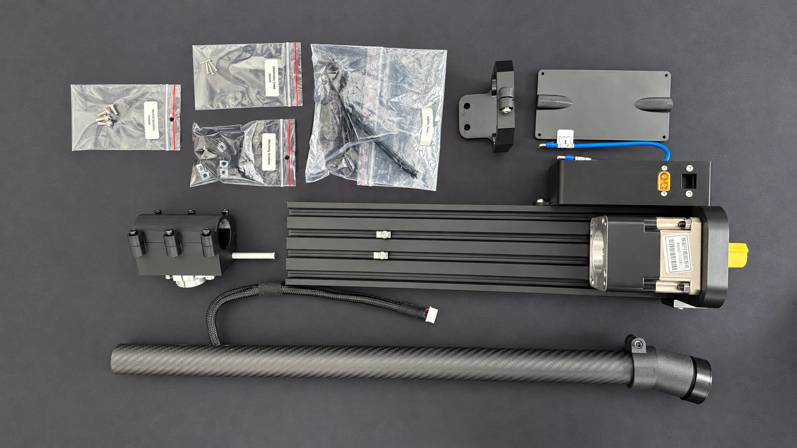

80% preassembled
Purchase the motor kit directly from VPforce and complete the remaining 20% yourself using the illustrated guide.

View full image ↗What’s inside
- Mounting rail with preinstalled planetary gearbox and electronics enclosure
- Mounting brackets for your individual setup
- Partially preassembled lever with grip connector and cable
- Counterweight box — included; installation optional. Additional weights purchased separately for optional balance adjustment.
External USB cable and XT60 power cable are not included.
VPforce motor kit purchased separately.
Open 80% assembly guide ↗